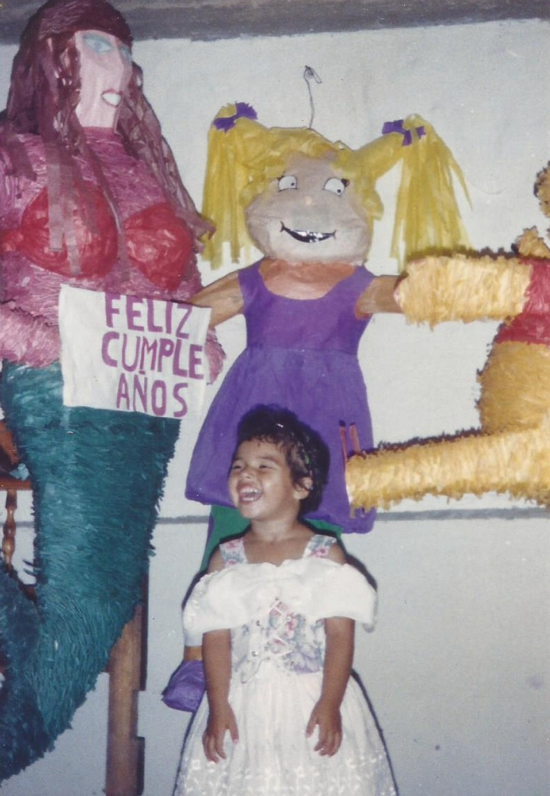
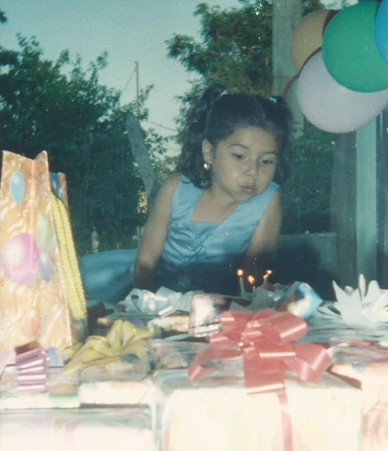

A la edad de 1 año empecé a caminar y me sostenía de las cosas para no caerme.
A mí siempre me han festejado mis cumpleaños, cuando estaba pequeña me hacían fiestas, siempre me hacían muchas piñatas, me llevaban muchos reglosy tenia muchos invitados. Mi mamá me cuenta que siempre las personas le preguntaban cuando sería mi fiesta de cumpleaños porque les gustaban las fiestas que hacían mis padres. Las piñatas eran hechas por ellos bien reforzadas por cierto. Mi mamá me conto que el primer año llore porque no quería que le pegaran a las piñatas porque decía que eran mías nada más.
Como mencione en todos mis cumpleaños me hacían fiestas, en mi cumpleaños número dos no fue la excepción. En la foto de la izquierda me encuentro con mi papá y en la foto de la derecha estoy en la mesa de regalos.
Antes de que cumpliera tres años realizamos un viaje a Mazatlán, fuimos mis papás, mis abuelos paternos y yo. Era la primera vez que yo viajaba a ese lugar, no sé exactamente en qué fecha fue el viaje. Cuando llegamos decidimos ir a pasear en barco, era la primera vez que yo subía a uno de ellos, en la tarde de ese mismo día fuimos a la orilla del mar. A parte de conocer la ciudad de Mazatlán también conocí el acuario que se encuentra en ese lugar, me pareció un lugar muy bonito y estaba asombrada con las especies que estaban ahí. Una de las cosas más graciosas que sucedió en el viaje fue que en la habitación donde estábamos hospedados en el hotel había un espejo muy grande, mi abuelo me contaba que me la pasaba en frente del espejo mirándome y haciendo muchas muecas y no me quitaba de ahí y por esa razín tuvieron que taparlo con una sábana para que no estuviera frente al espejo porque nada más quería estar ahí. No tengo foto de cuando estuve frente al espejo pero si una donde estaba en la habitación con mi papí y mi abuelo. De regreso llegamos a Culiacán al zoológico, mire muchos animales y nos tomamos muchas fotos, me gustó mucho un pavo real que estaba ahí y que justamente cuando me estaban tomando una foto extendió sus plumas y se miraba muy bonito.
Cuando llegamos del viaje que hicimos a Mazatlán como tres semanas después me realizaron mi acostumbrada fiesta de cumpleaños en compañía de mis vecinos y primos. Tuve tres piñatas una por cada uno de mis años, una era de una sirenita, otra de un Winnei Pooh y la ultima de Angélica de aventuras en pañales que era una de las caricaturas que miraba de pequeña.

Al cumplir los cuatro años de nuevo tuve mi festejo de cumpleaños e igual se celebró con un pastel, piñatas y tuve muchos regalos. A esa misma edad fui modelo en una pasarela para la exposición de un vestido que mi mamá elaboro como evidencia de un curso de corte y confección al que asistía en la asegurada de Ruiz Cortines. Recuerdo que la maestra de mi mamá tenía un hijo más pequeño que yo, a mí siempre me ha gustado agarrar a los bebés y hacerles cariños, un día que asistí con mi mamá al curso se me ocurrió hacerle cariños al bebé y creo que estaba enojado porque me mordió y llore mucho, desde ese día mi mama decidió no llevarme a la clase con ella y dejarme en la guardería de ese mismo lugar con la maestra Alejandra ella es muy buena persona y sabia cuidar muy bien a todos los niños que estábamos a su cargo. También fui colera de mis tíos en su boda con ese mismo vestido.
Cuando cumplí los cinco años también tuve una fiesta de cumpleaños. Esa fiesta tiene una historia curiosa ya que casi todos los años el 19 de agosto llueve es raro el año en que no cae ni una gota de lluvia, pero ese día llovió mucho en la mañana y ya estaba planeada la fiesta, estaban repartidas las invitaciones y se tenía todo en mi casa para celebrar, tuvimos buena suerte que dejara de llover a medio día y saliera el sol muy fuerte y se secara un poco el lugar donde iba a ser la fiesta. Al igual que los otros años tuve muchos regalos y fue una fiesta muy divertida.

En 2001 en año en el que cumplí mis cinco años entre al kínder en el mes de Septiembre. Esa historia la puede ver en la sección de Estudios .
Inicio | Familia | Niñez | Adolescencia
© SRG Productions ™